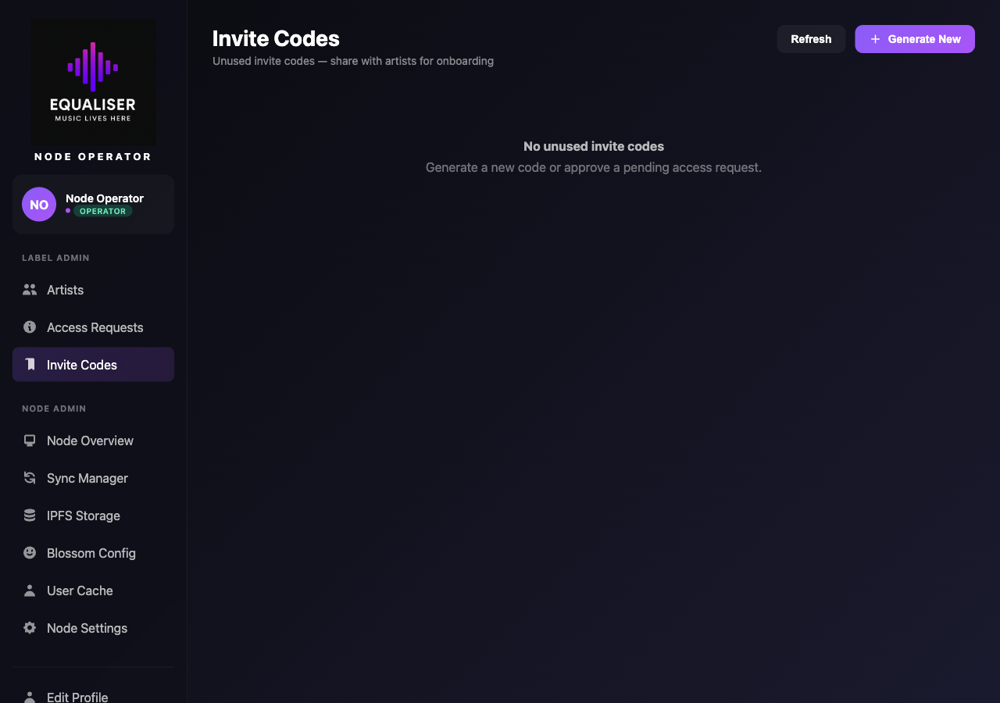
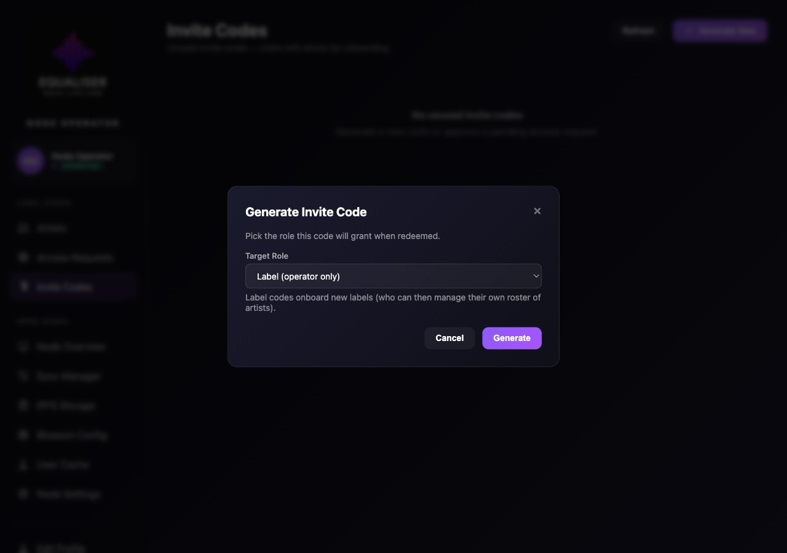
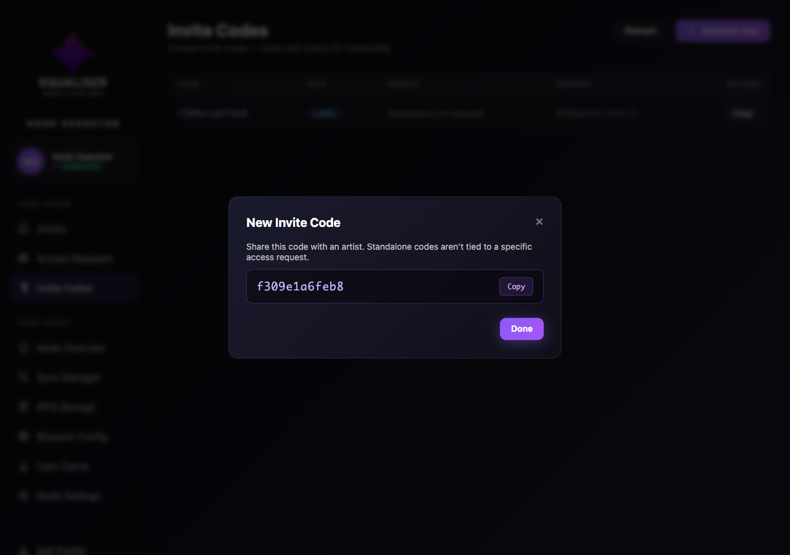
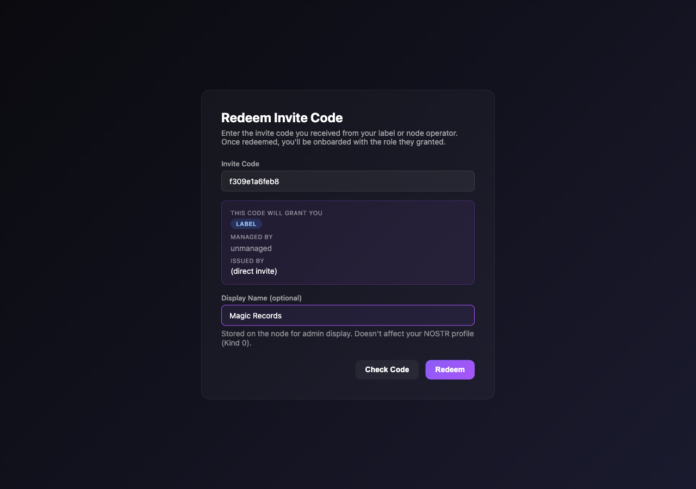
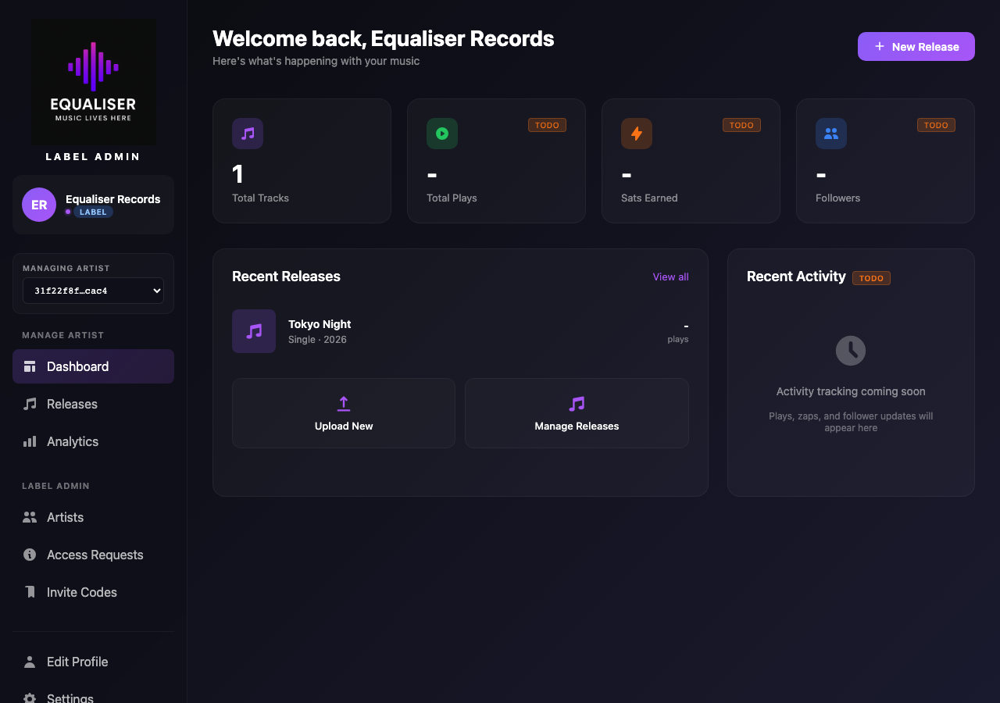

Label Onboarding
Labels can be onboarded two ways: (a) via the public /join form (same as the artist flow but with requested_role=label), or (b) directly by an operator generating a label invite code without a prior application. This page documents the direct path — it's the most common for a node operator wanting to bring a label partner aboard.
1 Visit invite codes admin
From /admin/invite-codes.html, the operator sees existing unused codes (each with role + source) and a button to generate new ones.

artist codes for their own roster.
2 Pick the role
The "Generate New" modal opens. Choosing Label requires operator privilege (server-enforced in routers/label.py). Choosing Operator additionally fires a confirm dialog because operator codes grant full node access.

3 Code generated
A 12-char hex code is shown. The relay's CreateOrphanInviteCode stores it with target_role='label' and issued_by = operator pubkey. The code is also visible from now on in the operator's invite-codes list (with a label badge in the role column) until used.

4 Code preview before commit
The label generates an nsec (or imports an existing one) on /admin/login.html, gets redirected to /admin/redeem.html, pastes the code, and clicks Check. The preview confirms what the code grants — label role, no manager (labels are unmanaged at the top level), and the issuer name.

RedeemInviteCode branches on target_role, redeeming a label code inserts the row into node_artists with role='label' (operator codes go into node_operators instead — different table, same flow).
5 Save your backup
After redemption, the label is required to download a backup file before continuing. The backup contains the nsec, npub, and the label's display name; restoring uses the existing backup-file login at /admin/login.html.

6 Profile setup — find or create the label's Kind 0
Every artist and label routes through /admin/profile-setup.html immediately after backup — no exceptions. The page first queries Damus, Primal, nos.lol and relay.nostr.band (plus the local node relay) for an existing Kind 0 on the label's pubkey:

For a brand-new label nsec, the search comes back empty and the user is asked to create a fresh profile. Labels populate the form just like artists — display name, bio, avatar/banner, website, NIP-05, Lightning address. (The Genres field is hidden for labels — labels are publishers, not artists.)

Relay selection: the local node relay is locked + checked; the label can also opt to publish to Damus / Primal / nos.lol / relay.nostr.band so other Nostr clients can find the label's profile. A Kind 10002 (NIP-65) relay list is published alongside Kind 0 to capture the choice:

["user-type", "label"] (so the relay denorm parser knows not to route the label into cached_artists) and a Kind 10002 with the selected relays. Both go to every checked relay via WebSocket. The "Go to Dashboard" button only enables once the local relay accepts the events.
7 Dashboard as label
The label clicks Go to Dashboard and lands on the admin home with their Kind 0 already discoverable on the wider Nostr network. The sidebar role badge reads label. They now have access to:
- Roster management — Artists, Access Requests, Invite Codes
- "Add Existing Artist" — generate roster invite codes for artists they want to manage, picking the Phase G Relationship type (Managed or Signed)
- Their own profile + drafts/releases — labels can also publish under their own brand identity
